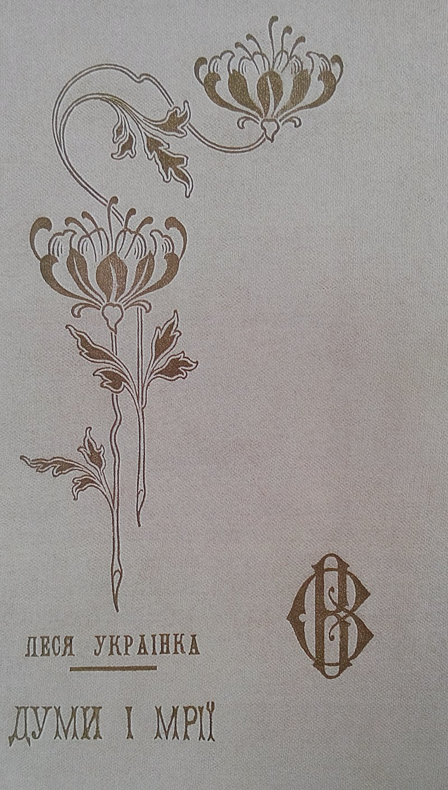
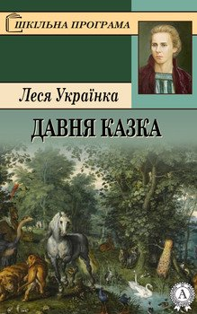
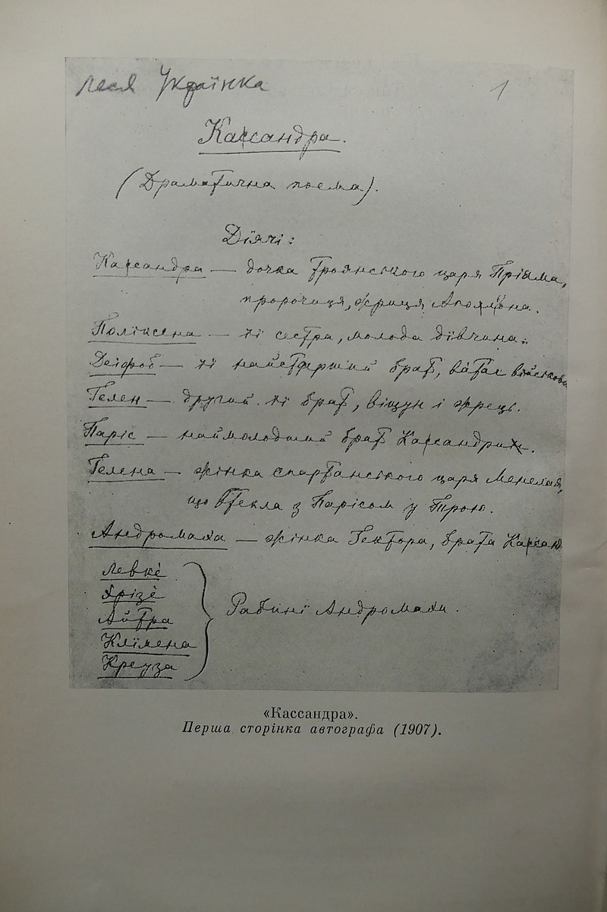
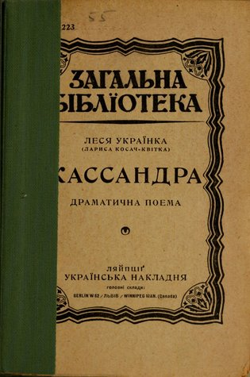
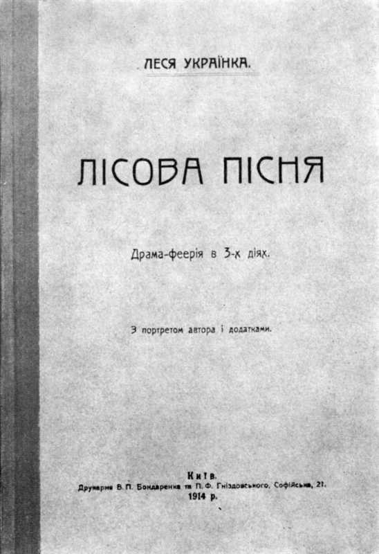

Леся Українка
Леся Українка (справжнє ім'я — Лариса Петрівна Косач, у шлюбі Косач-Квітка; 13 (25) лютого 1871, Звягель, Волинська губернія, Російська імперія — 19 липня (1 серпня) 1913, Сурамі, Тифліська губернія, Російська імперія (нині Грузія)) — українська письменниця, перекладачка, фольклористка, феміністка та культурна діячка, співзасновниця літературного гуртка «Плеяда» та групи Українська соціал-демократія. У сучасній українській традиції входить до переліку найвідоміших жінок давньої та сучасної України.
Писала в жанрах поезії, лірики, епосу, драми, прози, публіцистики, розвинула жанр драматичної поеми в українській літературі. Працювала в галузі фольклористики (наспівала 220 народних мелодій) і активно долучалася до процесів українського жіночого руху та національного відродження.
Серед мистецької спадщини такі твори
- збірки поезій:
- «На крилах пісень» (1893)
- «Думи і мрії» (1899)
- «Відгуки» (1902)
- поеми:
- «Давня казка» (1893)
- «Одно слово» (1903)
- драми-поеми:
- «Кассандра» (1901—1907)
- «В катакомбах» (1905)
- «Лісова пісня» (1911)
- «Камінний господар» (1912)
- «Бояриня» (1913)
«Думи і мрії»
До переліку книг«Думи і мрії» — друга збірка поезій Лесі Українки, вийшла друком у Львові 1899 році. До збірки ввійшли цикли: «Мелодії», «Невільничі пісні», «Відгуки» — поезії, написані у 1890-х роках та поеми «Давня казка» (1893) і «Роберт Брюс, король шотландський»(1893).
150 грн.
ПридбатиОпис
Про поетичну збірку «Думи і мрії» Іван Франко казав: «Від часів Шевченкового «Кобзаря» Україна не видала кращої збірки поетичних творів... Тут кожне її слово має силу і пластику, тут що не строфа, то мистецьке степенування поетичного шляху». У рядках збірки оживають давні легенди, що переплітаються зі споконвічною мудрістю, і читач відчуває, як слово поетеси торкається самого серця. Знайомі ще зі шкільної лави рядки сповнюються новим сенсом. Найкращі зразки творчості Лесі Українки в одній книжці — справжня поетична феєрія.
«Давня казка»
До переліку книг«Давня казка» — поема української поетеси Лесі Українки; написана в 1893 році.
150 грн.
ПридбатиСюжет
В одній країні жив талановитий Поет. Його пісні розходилися по всьому світу, були й порадою й розвагою. Якось Поет лежав у гаю просто на стежині. Гурт мисливський за цілий день нічого не вполював, і лицар сам повертався стежиною. Побачивши Поета, посміявся, що той, напевно, чекає гостинця. Поет же відповів, що в нього є більше багатство — поле, небо, синє море і його думки, які скрізь гуляють на волі. Граф засміявся й сказав, що віддав би увесь той химерний, таємний світ за справжнє графство й замок.
Якось приїхав лицар Бертольдо до Поета й попросив допомогти йому завоювати серце прекрасної донни Ізідори. Поет написав серенаду, лицар проспівав її, здобув прихильність дівчини й одружився з нею. На весіллі було багато людей, тільки Поета забули запросити.
Минув час. Король послав військо на чолі з Бертольдом на війну. Спочатку йому щастило, а потім лицарство потомилося, стало ремствувати, ніяк не могло взяти бусурманське царство. Почали нарікати на графа, навіть кинулись до зброї. Але тут виступили співці й проспівали про боягузів. Військо засоромилося, кинулося на штурм і здобуло перемогу. Бертольдо повернувся зі славою та багатством, але одразу ж забув про обіцяну нагороду для Поета, який склав ті підбадьорюючі пісні.
Спливло багато часу. Бертольдо зажив щасливо разом із дружиною, був справедливим і добрим паном. Але розкішне життя вимагало коштів, тож граф почав уводити різні мита, панщину, податки. Люди жили, як у пеклі. Одного разу пан почув, що по місту ходять співці й закликають до непокори. Бертольдо здогадався: ці бунтівничі думки — від його знайомого Поета, і відправив до нього слуг. Поет відповів, що не хоче надіти на вільні руки золоті кайдани. Тоді граф звелів посадити Поета в темницю, де той і загинув.
«Кассандра»
До переліку книг«Кассандра» — драматична поема української письменниці Лесі Українки, складається з восьми частин та епілогу. Розпочата у 1901 році в італійському курортному місті Сан-Ремо, завершена в Ялті й датована 5 травня 1907 року. За основу сюжету авторка взяла давньогрецький міф про Трою та, зокрема, про віщунку Кассандру, яка пророчила загибель Трої, та ніхто не дослухався до її пророцтв.
 140 грн.
ПридбатиОпис
«ся трагічна пророчиця, з своєю ніким не признаною правдою, з своїм даремним пророчим талантом, власне такий неспокійний і пристрасний тип: вона тямить лихо і пророкує його, і ніхто їй не вірить, бо хоч вона каже правду, але не так, як треба людям; вона знає, що так їй ніхто не повірить, але інакше казати не вміє; вона знає, що слів її ніхто не прийме, але не може мовчати, бо душа її і слово не дається під ярмо; вона сама боїться свого пророцтва і, що найтрагічніше, сама в ньому часто сумнівається, бо не знає, чи завжди слова її залежать від подій, чи, навпаки, події залежать від її слів, і тому часто мовчить там, де треба говорити; вона знає, що її рідна Троя загине, і родина, і все, що їй миле, і мусить сказати те вголос, бо то правда, і, знаючи ту правду, не робить нічого для боротьби, а коли й намагається робити, то діла її гинуть марно, бо – діла без віри мертві суть, а віри в порятунок у неї нема і не може бути; вона все провидить, вона все знає, але не холодним знаттям філософа, тільки інтуїцією людини, що все постерігає несвідомо і безпосередньо («нервами», як кажуть в наші часи), не розумом, а почуттям, – тому вона ніколи не каже: «Я знаю», а тільки: «Я бачу», бо вона справді бачить те, що буде, але пояснити аргументами, чому воно мусить так бути, а не інакше, вона не може. І пророчий дух не дар для неї, а кара, її ніхто не каменує, але вона гірше мучиться, ніж мученики віри і науки. Така моя Кассандра»
«Лісова пісня»
До переліку книг«Лісова пісня» — віршована п'єса в трьох діях Лесі Українки. П'єса написана в 1911 році у місті Кутаїсі, вперше була поставлена 22 листопада 1918 року в Київському драматичному театрі. Твір є одним з перших прообразів фентезі в українській літературі.
200 грн.
ПридбатиСюжет
Події, описані у творі, відбуваються у старезному густому предковічному лісі. Тут мешкають молоді і старі лісові та водяні істоти. Серед них живе безтурботна лісова русалка — дівчина Мавка. Але ось у ліс приходять люди. Це старий, поважний і дуже добрий дядько Лев та його небіж Лукаш — молодий хлопець, гарний, чорнобривий, стрункий. Мавка закохується в простого сільського хлопця, заради нього вона залишає озерний та лісовий світ і переходить жити до людей. Тендітна та наївна дівчина не змогла жити в жорстокому та цинічному світі людей. Хлопець покинув Мавку, але вона залишилася відданою своєму коханню, хоча це й призвело до її загибелі...